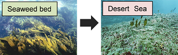
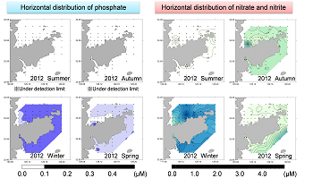
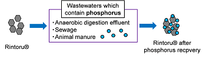
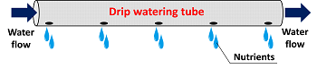
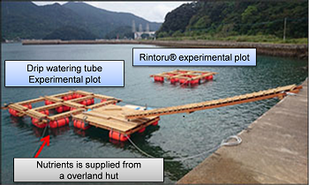
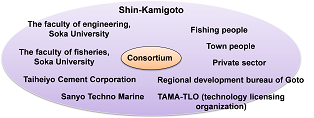

Toda Lab Project Soka University Faculty of Engineering
Projects
Verification experiment for preventing sea desertification in Shin-Kamigoto, Nagasaki Prefecture, Japan (2014-2016)
In rocky areas along the shore, various seaweeds generally grow abundantly from the water's edge to the dozens of meters. Such seaweed beds play an important role as feeding sites and/or safe houses for larvae and juveniles, maintaining their survival rate. Therefore, seaweed beds contribute to conservation of fishery resources. Recently, however, seaweed beds in many coastal areas in Japan have decreased and turned into "Desert seas".

Fig. Seaweed bed (left) and desert Sea (right)
Such sea desertification has also been found and progressing in Shin-Kamigoto, Nagasaki Prefecture located at East China Sea. Sea desertification may be caused by (1) global warming (high water temperature), (2) nutrient shortage in coastal area, (3) feeding damage or (4) man-made coastal change. In 2013, our laboratory conducted a field study to clarify seasonal nutrient variation in the surrounding ocean area, Shin-Kamigoto. The obtained results showed that phosphate was clearly lacking in the summer and autumn (Toda 2013, Research report of seasonal nutrient variation in surrounding ocean area, Shin-Kamigoto). Therefore, our laboratory has been engaged on verification experiment for preventing sea desertification by fertilizing nutrients. This research project is a commissioned project by Shin-Kamigoto, Nagasaki Prefecture in Japan (2014-2016).

Fig. Spatial and seasonal distributions of nutrients
We focused on sewage, which is discharged from living area in Shin-Kamigoto, as a nutrient source (i.e. phosphorus) for cultivating seaweeds. Investigated nutrient circulation system is expected as an effective method for regenerating seaweed beds and improving fisheries yield. We expect that such system can contribute to the development of a sustainable society which uses a concept of nutrient circulation by connecting land with sea.

Fig. Schema of nutrients circulation by connecting land
with sea in this research project
In the case of fertilizing nutrient into the ocean, nutrient supply methods should be considered carefully. Rapid nutrient loading into ocean may cause phytoplankton blooms, leading to red tide problem. Therefore, we designed two types of nutrient supply methods (Patent-pending)..
One of the proposed methods is the utilization of a highly-functional phosphorous adsorbent "Rintoru(R)". Rintoru(R) (manufactured by Taiheiyo Cement Corporation) is an amorphous calcium silicate hydrate (A-CSH) which has phosphorus recovery ability and excellent handle-ability. This adsorbent has following advantages: (1) the recovered material can be used directly for fertilizer and little residual remains after utilization and (2) phosphorus can be released gradually into ocean (slow nutrient supply).

Fig. Scheme of Rintoru(R)
The other method is utilization of drip watering system. The drip watering, which means watering drop by drop in a slow manner, is originally used for agriculture. In this research project, drip watering tube was applied for supplying nutrient into the ocean. This supply method has following characteristics: (1) intensive nutrient supply can be conducted and therefore nutrient spreading will be prevented, and (2) the amount and period of water supply can be controlled and therefore effective nutrient supply will be achieved.

Fig. Scheme of drip watering tube
We designed two novel seaweeds cultivating systems using Rintoru(R) and drip watering tube. In order to evaluate the effect of investigated systems, two experimental plots with two experimental rafts were set up in coastal area of Shin-Kamigoto, and verification experiment began at October, 2014. The experiments are currently underway and amount of seaweed growth and environmental factors have been monitored constantly.

Fig. Experimental rafts for verification experiment in
Shin-Kamigoto
This research project has been conducted by joining industry, academia, government and local people. Centering on Shin-Kamigoto, the faculty of engineering of Soka University, the faculty of fisheries of Nagasaki University, Taiheiyo Cement Corporation, Sanyo Techno Marine, fishing people, town people, private sector, regional development bureau of Goto and TAMA-TLO (technology licensing organization) are joining as a team of this research project. The faculty of engineering of Soka University assumes a role for designing, operating and evaluating the investigated nutrient supply system. The faculty of fisheries of Nagasaki University assumes a role for analyzing microbial community dynamics and evaluating productivity in seaweed bed. Taiheiyo Cement Corporation conducts phosphorus recovery and evaluates its efficiency. Sanyo Techno Marine conducts an assistant of verification experiment and evaluates seaweed bed growth.

Fig. Consortium scheme of the research project
The verification experiment in our project was featured on TV or newspapers.
- The Nagasaki Shimbun (June 26 2014)
- The Yomiuri Shimbun, Kyushu edition (September 17 2014)
- The Nagasaki Shimbun (October 18 2014)
- The Nagasaki Culture Telecasting (October 30 2014)
- The Nagasaki Shimbun (December 25 2014)